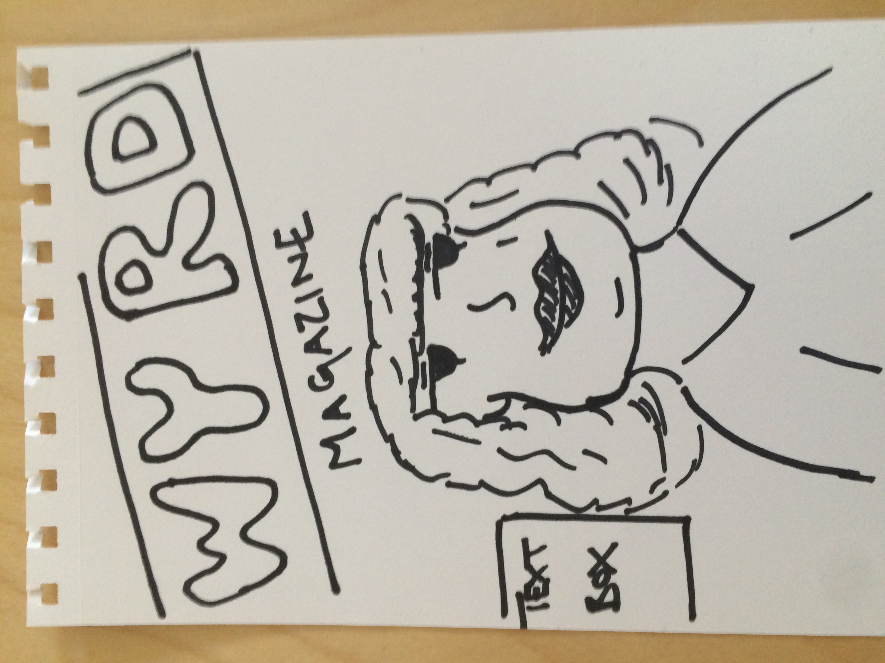
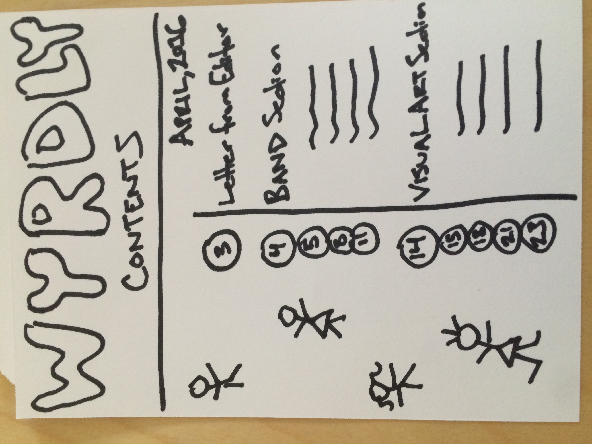
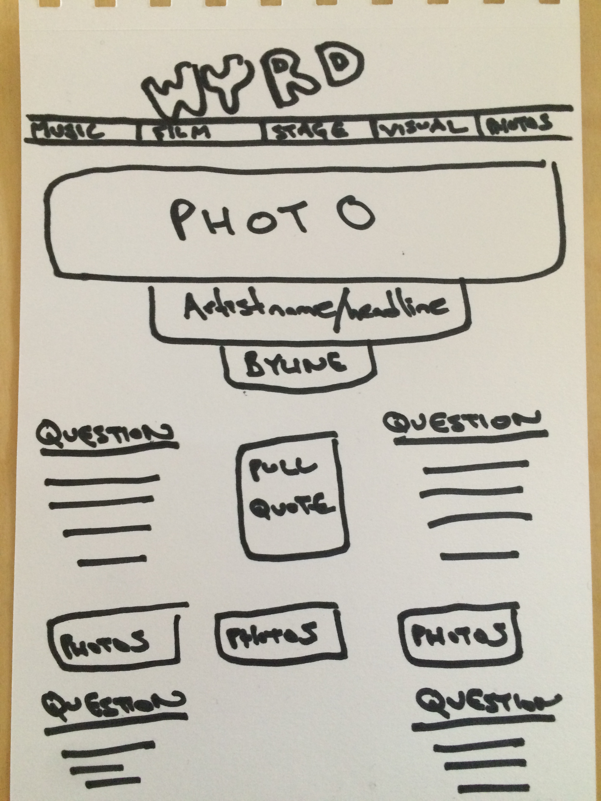
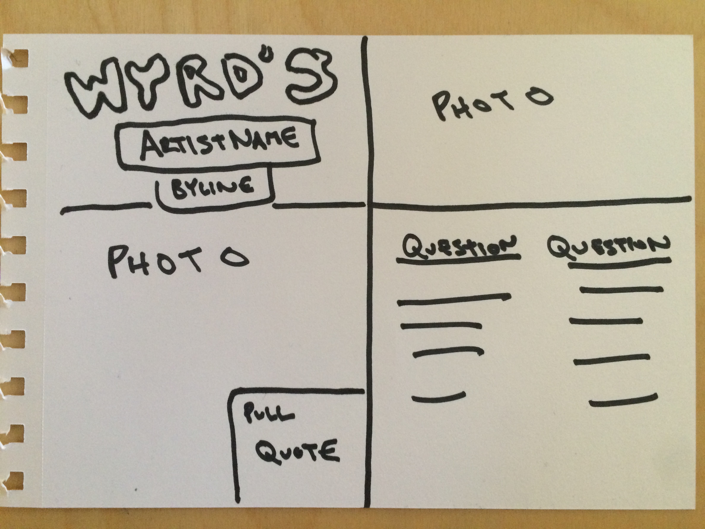

MAGAZINE IDEA:
WYRD Magazine




Name: Wyrd Magazine.
- Play on the word weird, but also a concept in Anglo-Saxon culture, roughly corresponding to fate or personal destiny.
- The idea is to feature artists living in New York specifically––all relatively unknown and feature their work and include interviews as well.
- Taking the concept of Interview Magazine, but focusing solely on people doing cool art and giving them a platform to showcase it. Give them a bigger spread and interview than Interview magazine does.
- This magazine would be a monthly publication.
- This magazine would also be small-independent magazine.
- The audience would be artists who are interested in what other people are doing as a way to get inspired, and people who are interested in the arts. The point is not to explain things to people who know nothing about music or visual arts, but to provide a publication for people who are knowledgable already.